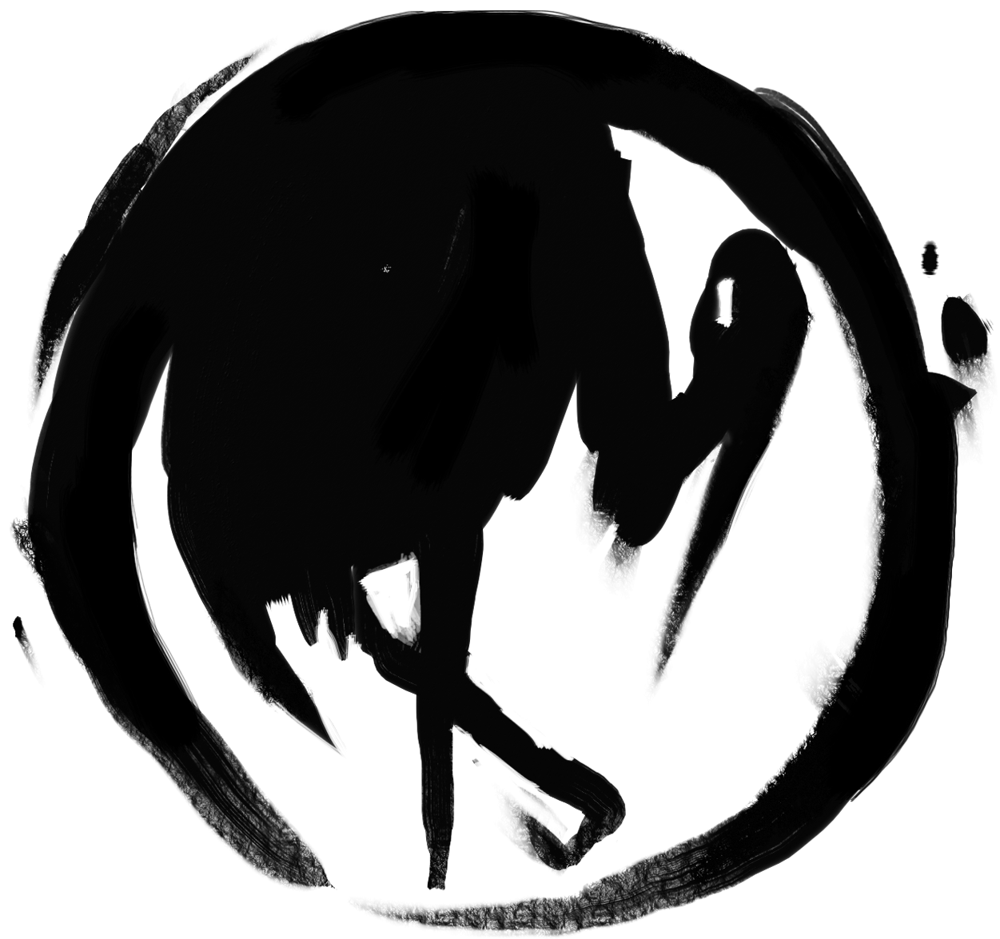

Le clan de la Grue 
Il existe une technique adéquate pour chaque chose.
Le Clan de la Grue est la main gauche de l’Empereur, qu’il assiste en qualité de conseiller politique du trône.
La tradition veut que Hantei choisisse son épouse au sein de la famille Doji.
La famille Kakita a donné à Rokugan plus de Champions d’Émeraude que n’importe quelle autre.
Les samouraïs de la famille Daidoji figurent parmi les meilleures troupes de choc de l’Empire.
C’est pourtant dans le domaine de la culture que le Clan de la Grue apporte la plus importante contribution.
Les plus grands poètes et les plus grands artisans sortent souvent de ses écoles, et rares sont les duellistes à pouvoir rivaliser avec les siens.
La Grue règne en maître à la cour. Sa richesse et son statut le prouvent.
Les familles du clan de la Grue
La famille Asahina
Les Asahina recherchent l’harmonie et la paix en toute chose. Ils incarnent une philosophie de compassion et de pacifisme, qui les distingue même des autres familles du Clan de la Grue. Ils cherchent par l’art et la prière à apaiser le monde qui les entoure, ainsi qu’à répandre la paix et l’harmonie à travers l’Empire. Les Asahina savent que l’on ne peut acheter la paix que par le sacrifice, et c’est un prix qu’ils sont prêts à payer s’il leur permet de pousser l’Empire à se perfectionner.
La famille Daidoji
Pragmatiques et travailleurs, les Daidoji constituent l’essentiel des armées du Clan de la Grue. Dévoués au clan, les Daidoji ne sont pas appréciés à leur juste valeur, même s’ils en constituent la base, depuis les Grues de fer composant le cœur du dispositif militaire du clan jusqu’aux vigilants yōjimbō des courtisans Doji, en passant par le Conseil commercial Daidoji chargé de fournir les fonds et les matières premières nécessaires aux œuvres d’art du clan. Les nobles efforts de la famille sont indispensables à la défense et la progression des objectifs de la Grue.
La famille Doji
Les descendants du Kami Doji incarnent les arts courtois et la culture raffinée depuis les origines de l’Empire. Une cour importante n’est pas complète sans quelques courtisans Doji pour y dispenser l’art, l’amitié et — jusqu’à une époque très récente — les généreux présents. Le réseau de communication de la famille n’a pas son pareil quand il s’agit de collecter les nouvelles et de répandre les rumeurs. Associé à la maîtrise de l’étiquette et des arts, il leur permet de garder une longueur d’avance sur leurs rivaux. Rares sont ceux qui peuvent se permettre d’offenser la famille Doji ne serait-ce qu’une fois, et plus rares encore ceux qui récidivent.
La famille Kakita
Si la famille Doji aspire à l’excellence en toute chose, les Kakita se concentrent plus volontiers sur une seule compétence, qu’ils s’efforcent de maîtriser à la perfection. Dans l’art du sabre ou de la calligraphie, ces samouraïs poursuivent leur objectif avec une singulière attention. Doués de la beauté caractéristique du clan, les gracieux Kakita sont toutefois plus athlétiques que leurs cousins Doji. Ils figurent parmi les meilleurs duellistes de l’Empire, et les diplômés de leur académie défendent l’honneur de la Grue avec la précision mortelle d’une lame de maître.